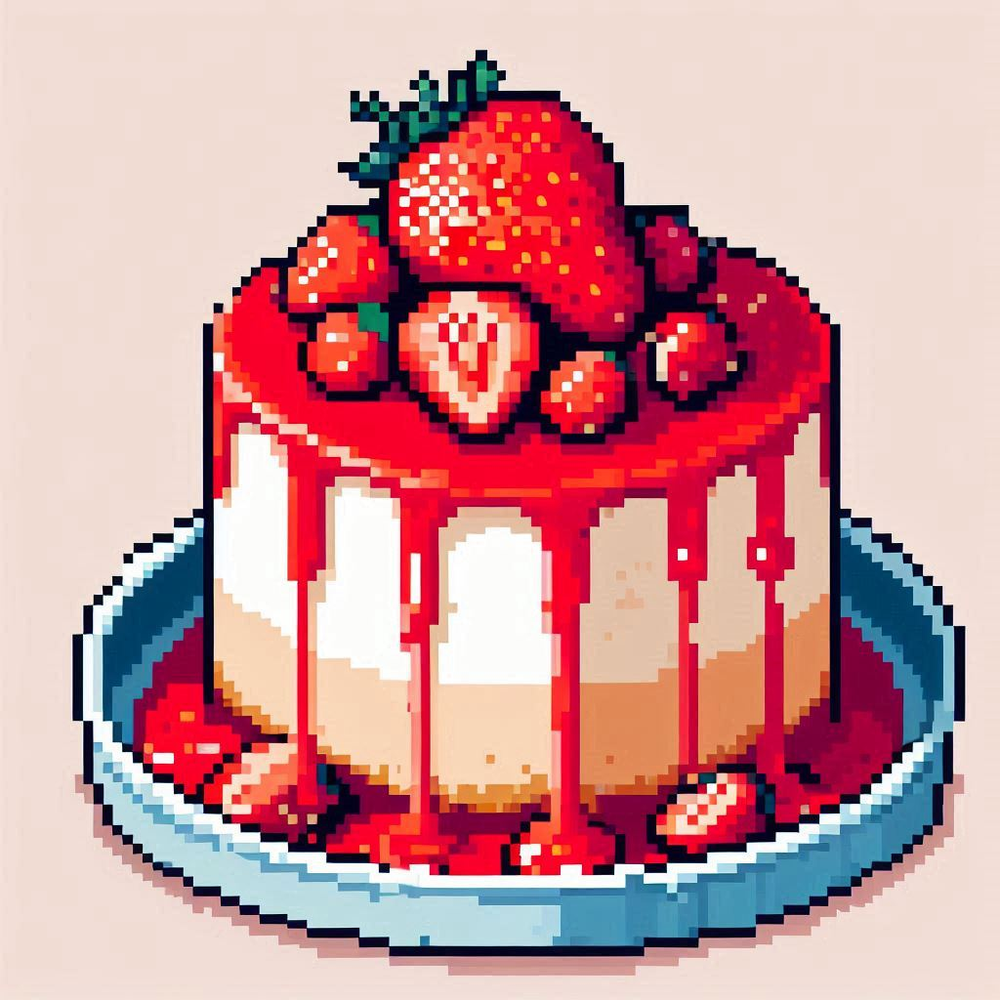

Strawberry Cheesecake

Description
Strawberry cheesecake is a delightful dessert that combines the richness
of cheesecake with the vibrant sweetness of strawberries. This classic
dessert typically features a creamy and light cheesecake base, often made
with cream cheese, sugar, eggs, sour cream, and vanilla extract, poured
over a graham cracker crust. The highlight of a strawberry cheesecake is
the luscious strawberry topping, which can vary from fresh strawberry
slices to a strawberry sauce or puree. The strawberries can be
incorporated into the filling or used as a garnish, adding a burst of
fruity flavor to each bite. Whether baked or no-bake, strawberry
cheesecake is a popular treat enjoyed for its perfect balance of creamy,
tangy, and sweet flavors, making it a favorite for dessert lovers seeking
a refreshing and indulgent treat.
Ingredients
Base
- 100g margarine
- 200g cornstarch biscuit
Filling
- 400g cream cheese
- 395g condensed milk
- 200g heavy cream
- 12g unflavored gelatin
- A pinch of salt
Cake top
- 400g frozen strawberries
- 150g sugar
- Half strip of a lemon
- maize starch
Directions
-
Grind the cornstarch biscuit until it resembles crumbs and separate it
into a container. Melt the margarine in the microwave and then pour it
over the cornstarch biscuits, mix everything until the dough stops
sticking to your hands.
-
Separate the cream cheese, condensed milk and cream inside the
blender. Place 5 tablespoons of water in a pan and add the unflavored
gelatin, stir until it boils and throw it into the blender with the
other ingredients. To enhance the flavor, also add a pinch of salt to
the filling.
-
Place the cornstarch cookie dough in a mold with a removable bottom,
mold the dough into the shape of the mold and pour the finished
filling on top, place the mold in the refrigerator and let it cool for
about an hour.
-
For the topping, place the frozen strawberries in a pan and wait for
it to melt until the strawberries are soft enough to mash. After
mashing all the strawberries, add sugar and half a lemon. To thicken
the icing, make a mixture of cornstarch with a little water, add it to
the icing and mix well. Once the topping is ready, place it in another
container with a lid and leave it in the fridge until it cools.
-
Once everything is well cooled, remove it from the fridge and pour the
topping over the filling, remove the sides of the removable bottom
mold and that's it!